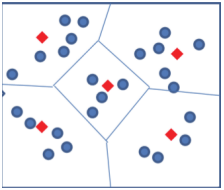
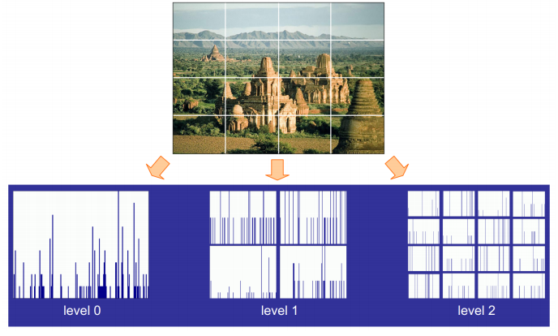

|
Table of contents
|
Baseline Implementation and Results
Implementation
We downloaded the provided the SpatialPyramid code and used the following functions for the baseline classification:
- GenerateSiftDescriptors.m: for generating SIFT descriptors for all the images
- CalculateDictionary.m: for creating the texton dictionary by using K-means clustering

- BuildHistograms.m: for building histograms(Bag of Features descriptor) of all images after texton labeling, each SIFT feature assigned to exactly one cluster
- CompilePyramid.m: for generating the pyramid from texton labels

- hist_isect.m: for computing histogram intersection kernel
Training and classification is performed using
Results
Mean Accuracy
We were able to obtain a reasonable mean accuracy of 78.526 FIX ME!!!!! by running our baseline implementation.
Confusion Matrix
Shown below is the confusion matrix generated by performing classification using baseline implementation:
FIX ME!!!!!
|